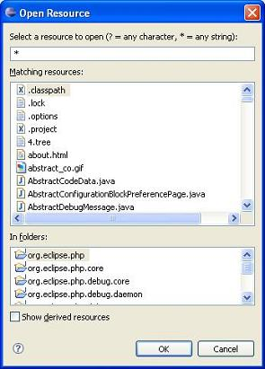
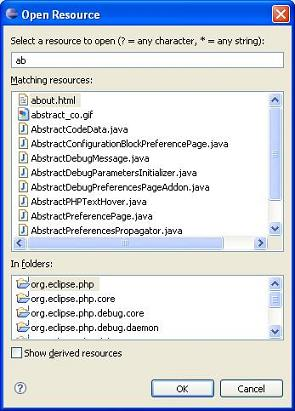

Use Open PHP Element to navigate to a PHP element (Class, Function or Constant) in an open file or project.
To open the Open Element dialog:
From the main menu select Navigate | Goto Resource.
Enter the resource name and choose the applicable resource.
Select a resource and click OK to navigate to the resource in the open file or project. Alternatively, double-click to navigate to a resource in the open file or project.
The Open Element dialog has an auto completion search capability that alphabetically lists resource names according to the characters or strings entered into the text entry field at the top of the dialog.
|
 |
 |
Figure: 1 - Open PHP Element
You can filter for element types by entering strings and/or wildcards.
Select each PHP element type that you want to list. Other element types will not be displayed